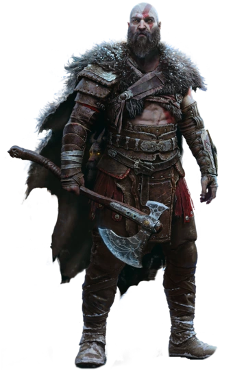

This is a shoutout and short desciption of my favorite videogames/series and protagonists.
Set in Greek Mythology, Kratos is portrayed as a Spartan warrior. Kratos quickly rises through the ranks to become the General of the Spartan Army. Upon defeat by barbarian hordes Kratos makes a deal with Aries the God of War to spare his life and destroy his enemies. In return Kratos becomes Aries servant. Aries tricks Kratos into murdering his family to become a more perfect warrior better known as "the Ghost of Sparta" with his family's burnt white ashes forever visible on his skin. This sparks Kratos into waging war against Aries and killing him, becoming the new God of War. Zeus then betrays Kratos for killing Aries and putting a stop to Kratos' uncontrollable rage, it is revealed that Kratos is a Demigod and the son of Zeus and Callisto in Greek Mythology. Kratos then joins the Titans to wage war on Mt. Olympus. Kratos kills all gods and many titans alike to exact his revenge, once Kratos "kills himself" he is later seen many years later in Norse Mythology. In the newer God of Wars, Kratos has a new family living a simple life in the woods. His journey alongside his son Atreus starts by spreading the ashes of his wife from the highest peak in all the nine realms. Many Norse Pantheon gods start to pick a fight with Kratos and he knows not why. Upon this journey Kratos has become more wise tries teaching his son how to control his rage and not make the same mistakes that he made at a younger age while trying to become a better father. Their existence in the realm displeases Odin, Norse Mythology's "All-Father" and eventually Ragnarök "end of all things" sets in.
Kratos is stoic, violent, arrogant, relentless and does what he wants depite the consequences. In the greek mythology games he is set on vengeance against the greek Gods and Titans who wronged him, to the point where he kills them all. Kratos is last seen plunging the Blade of Olympus "that ended the Great War between the Gods and Titans" into his chest and bleeding out. This makes players assume he will die until a cutscene reveals a trail of blood going over a cliff and his body nowhere to be seen.
Fast forward to the new God of War, Kratos has a new family in Norse mythology. Kratos is now portrayed as a calmer, wiser warrior. Kratos can control his rage and turn the other cheek at times when his prior self would fly off the handle. Kratos is now a father and must mentor his son since his second wife has died. Kratos walks a fine line hiding his sons divinity from him for fear of his son resenting him and killing him as he did Zeus.

God of War Wiki
Favorite Weapons:
Doom is based on an unammed Space Marine battling the demons and the undead alike. The narrative takes place when humans "Union Aerospace Corporation" try to harness argent energy as a powersouce and even for weapons. Much of the game takes place on Mars and in parts of hell itself. Whether by design or accident gateways to hell are opened and demons flood in threatening everyone on mars and eventually decimating earth. DoomSlayer is the only thing the hordes of demons and undead fear. DoomSlayer is highly-intelligent, resilient, unbreakable, incorruptable, unyielding, unbridled seething rage towards demons and killing them to save humanity.
Favorite Weapons:
Jin Sakai was a samurai on the Island of Tsushima, taken in by his uncle after his father was murdered. Jin is to carry on the Sakai clan. The Mongols under Khotun Khan launched an invasion on his homeland. Jin and a small number of samurai launched an impossible attack to slow down the Mongols invasion before Japans mainland. Jin was mortally wounded, his uncle captured, and the others perished. Jin recovered and began fighting back against the overwhleming force in an attempt to save his uncle. The lack of military power and tactics used by Jin to destroy the enemy by any means necessary contradict the honor and traditions of samurai. Jin becomes known as the "Ghost of Tsushima" working from the shadows. Upon defeating the mongols, Japan's shogun dissolves the Sakai clan and labels Jin a traitor despite saving Japan. Jin must then decide whether to duel and kill his uncle or spare him.
Jin is humble, stoic, calm, and reserved. Being taught the traits of a samurai he puts his people first being polite, sympathetic, and kind. Despite having great mastery of his emotions he must make uncharacteristic choices and tactics to defeat the mongol hoards. This in turn helps him adopt the philosophy of saving his people by any means necessary despite some tactics not being honorable.
Favorite Weapons:
I am not affiliated with nor own any rights regarding this page's images/url source or wiki url source. No profits were generated from this project. All materials utilized were for educational and demonstration purposes only.